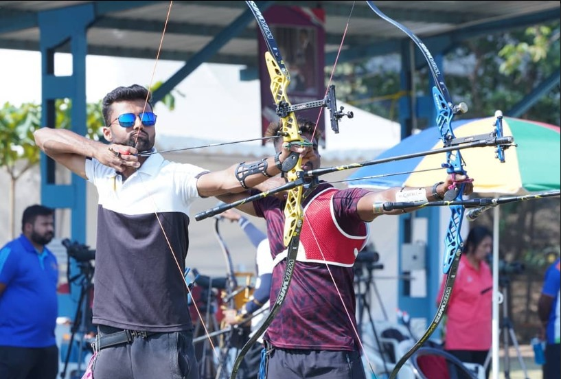

<div class="container-fluid">
    <div class="row">
        <div class="col-12">
            <h1 class="text-center mobile-view">Olympic Archers Recurve
                Bows</h1>
        </div>
        <div class="col-sm-12 col-md-6 col-lg-6 mb-3">
            
        </div>
        <div class="col-sm-12 col-md-6 col-lg-6 mb-3">
            <p>In archery, a recurve bow is one of the main shapes a bow can
                take, with limbs that curve away from the archer when unstrung.
                A recurve bow stores more energy and delivers energy more
                efficiently than the equivalent straight-limbed bow,
                giving a greater amount of energy and speed to the arrow. A
                recurve will permit a shorter bow than the simple straight limb
                bow for given arrow energy,
                and this form was often preferred by archers in environments
                where long weapons could be cumbersome, such as in brush and
                forest terrain, or while on horseback.
                Recurved limbs also put greater stress on the materials used to
                make the bow, and they may make more noise with the shot.
                Extreme recurves make the bow unstable when being strung. An
                unstrung recurve bow can have a confusing shape and many Native
                American weapons,
                when separated from their original owners and cultures, were
                incorrectly strung backwards and destroyed when attempts were
                made to shoot them.
                A test performed by Hepworth and Smith in 2002 of a preparation
                manufactured from bovine tendon and pearl glue and used in
                traditional Asiatic recurve bows showed that the composite
                "was found to absorb 18 MJ/m3 of energy to failure, comparable to carbon fibre composites, spring steel and butyl rubber."</p>
        </div>
        <div class="col-sm-12 col-md-6 col-lg-6 mb-3">
            <h3>The Anatomy of an Olympic Recurve Bow</h3>
            <ol>
                <li>Riser: The central part of the bow where the archer grips.
                    Made from materials like aluminum or carbon fiber, it
                    provides stability and balance.</li>
                <li>Limbs: Attached to the riser, these can be made from
                    laminated wood, carbon, or fiberglass. They store the energy
                    when the bow is drawn.</li>
                <li>String: Typically made from high-performance synthetic
                    materials, it connects the tips of the limbs and propels the
                    arrow.</li>
                <li>Arrow Rest: A small device on the riser where the arrow
                    rests before being shot.</li>
                <li>Sight: An adjustable aiming device that helps archers aim
                    with greater precision</li>

            </ol>
        </div>
        <div class="col-sm-12 col-md-6 col-lg-6 mb-3">
             </div>
        
            <div class="row p-4" style="background-color: rgb(215, 218, 221);">

                <h2 class="text-center">Recurve and compound archery -
                    history</h2>
                <p><b>Recurve is a</b> traditional bowstyle used in competitions
                    since World Archery was founded in 1931. Recurve has been
                    the only archery discipline in the Olympics since archery
                    returned to the big stage at the Munich 1972 Games after a
                    52-year hiatus.
                    Recurve archery events are also held at the Paralympic
                    Games. Nearly all major tournaments organised or sanctioned
                    by World Archery include recurve archery events. Compound
                    archery , meanwhile, was invented in the USA in the 1960s
                    and was included in World Archery Championships for the
                    first time in 1995. It has been part of the Archery World
                    Cup since the inaugural edition in 2006 and is also a part
                    of the World Games. Major continental events, including the
                    Asian Games, feature competitions in both compound and
                    recurve archery. Barring the Olympics,
                    all major archery events in the world feature the same
                    number of medal events for both the recurve and compound
                    disciplines.</p>
            </div>
        
        <div class="row -2">
            <h2 class="text-center my-3">Recurve vs compound archery - bows</h2>
            <div class="col-sm-12 col-md-6 col-lg-6 mb-3">
                
            </div>
            <div class="col-sm-12 col-md-6 col-lg-6 mb-3">
                <p><b>A recurve bow</b> <br>
                    The archers need to use their muscle strength to pull the
                    bow string for a shot before releasing the arrow manually by
                    relaxing their fingers. This archery form requires more
                    technique and archers use an adjustable sight (pin/window)
                    for taking aim before releasing the string. A compound bow,
                    on the other hand, has more bells and whistles. These
                    feature pulleys, cables, a magnifying lens depending on
                    archer’s preference along with a release switch. These
                    add-ons contribute to more power and precision but make the
                    compound bow a lot heavier.</p>
            </div>
        </div>

        <div class="col-sm-12 col-md-6 col-lg-6 mb-3">
            <p><b>A compound bow</b> <br>
                A compound bow’s pulley system, known as cams, allows for a
                let-off,
                reducing the holding weight at full draw. This feature enables
                archers to hold the bow steady and aim for longer periods
                without tiring their muscles.
                Unlike recurve bows, the archers don’t need to hold the full
                draw weight while using a compound bow and use the release
                switch.
                The sight can also magnify the target and makes aiming
                easier.</p>
        </div>
        <div class="col-sm-12 col-md-6 col-lg-6 mb-3">

            
        </div>

    </div>
</div>